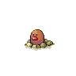

📖 英語版の図鑑説明
It burrows through the ground at a shallow depth. It leaves raised earth in its wake, making it easy to spot.
日本語訳
浅い深さで地面を掘り進む。掘り進んだ跡に盛り土が残るので、見つけやすい。
📝 この図鑑文に出てくる英単語
| 英単語 | 意味 | 品詞 | レベル |
|---|---|---|---|
| burrows | 巣穴(複数形) | 名詞 | 大学 |
| shallow | 浅い | 形容詞 | 高校 |
| depth | 深さ | 名詞 | 高校 |
| raised | 育てられた | 動詞 | 中3 |
| earth | 地球、土 | 名詞 | 中2 |
| making | 作っている | 動詞 | 中1 |
| spot | 場所、見つける | 名詞 | 高校 |
文法ポイント It burrows は現在形。図鑑では、そのポケモンがふだんから繰り返している習性を現在形で表します。主語が it なので動詞に s がついています。
💡 英語名「Diglett」の由来
英語名「Diglett」は、dig（掘る）と-let（「小さい〜」を表す語尾）を組み合わせた名前と考えられている。フランス語の名前は「Taupiqueur」で、taupe（モグラ）、marteau-piqueur（削岩機）から作られている。
出典 Bulbapedia
✨ ディグダの豆知識
アローラのディグダは、公式イラストやアニメでは体の色がふつうのディグダより濃くて暖かい色。ところが本編ゲームの3Dモデルにはその違いが反映されていない。
出典 Bulbapedia
📊 ディグダの種族値
HP10
こうげき55
ぼうぎょ25
とくこう35
とくぼう45
すばやさ95
合計 265
❓ よくある質問
- ディグダの英語名は？
- ディグダの英語名は「Diglett」です。
- ディグダの英語名「Diglett」の由来は？
- 英語名「Diglett」は、dig（掘る）と-let（「小さい〜」を表す語尾）を組み合わせた名前と考えられている。フランス語の名前は「Taupiqueur」で、taupe（モグラ）、marteau-piqueur（削岩機）から作られている。
- ディグダは英語版の図鑑でどう説明されている？
- 「It burrows through the ground at a shallow depth. It leaves raised earth in its wake, making it easy to spot.」と書かれています。日本語にすると「浅い深さで地面を掘り進む。掘り進んだ跡に盛り土が残るので、見つけやすい。」という意味です。
ディグダは第1世代（カントー地方）のポケモンです。第1世代（カントー地方）の英語名一覧 →